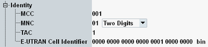

Identity Settings
This section configures identities of the simulated radio network. The values are transferred to the UE under test via broadcast.

Network identity settings
Specifies the three-digit mobile country code (MCC).
Remote command:Specifies the mobile network code (MNC). A two or three-digit MNC can be set.
Remote command:Specifies the tracking area code (TAC).
Remote command:Specifies the E-UTRAN cell identifier, unique within a PLMN. It is sent to the UE via broadcast and can be set independent of the physical cell ID (see "Physical Cell ID").
Remote command: